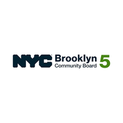
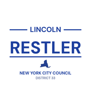
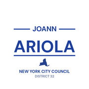
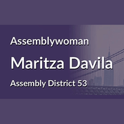
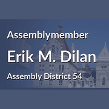
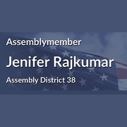
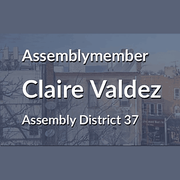
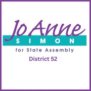

The district
 City Council
City Council State Assembly
State Assembly CongressSubway
CongressSubway Citi Bike
Citi Bike NYC Ferry
NYC FerryTurn layers on and off. Tap an official's logo or a board's seal for its page. Zoning and land use lot by lot are on the land use map.
About
State Senator Julia Salazar represents State Senate District 18. It reaches into Brooklyn and Queens.
The district overlaps community boards Brooklyn 1, Brooklyn 4, Brooklyn 5 and Queens 5.
It is policed by the 75th, 83rd, 90th, 94th and 104th Precincts.
It overlaps council districts 32, 33, 34 and 37 and Assembly districts 38, 50, 53 and 54.
Members of the State Senate serve two year terms.
Next on the ballot in November 2026. Find your poll site and sample ballot there, or see what is coming up on the calendar.
State Senate District 18 in numbers
U.S. Census Bureau, American Community Survey 2019-2023 5-year estimates.
Committees
Contact
Overlap
Community boards




Bars show how many of the district's election districts fall in each board.
Overlapping elected officials








| Brooklyn CB 1 | 40% of the senate district | 63% of it |
| Brooklyn CB 4 | 27% of the senate district | 100% of it |
| Queens CB 5 | 19% of the senate district | 19% of it |
| Brooklyn CB 5 | 14% of the senate district | 19% of it |
| 90 Precinct | 30% of the senate district | 95% of it |
| 83 Precinct | 27% of the senate district | 100% of it |
| 104 Precinct | 19% of the senate district | 19% of it |
| 75 Precinct | 14% of the senate district | 16% of it |
| 94 Precinct | 10% of the senate district | 31% of it |
| Sector 104A | 15% of the senate district | 50% of it |
| Sector 75A | 14% of the senate district | 75% of it |
| Sector 90D | 11% of the senate district | 100% of it |
| Sector 94B | 10% of the senate district | 78% of it |
| Sector 83A | 10% of the senate district | 99% of it |
| Sector 90B | 8% of the senate district | 100% of it |
| Sector 83D | 6% of the senate district | 100% of it |
| Sector 83B | 6% of the senate district | 99% of it |
| Sector 90C | 6% of the senate district | 100% of it |
| Sector 83C | 6% of the senate district | 100% of it |
| Sector 90A | 5% of the senate district | 76% of it |
| Sector 104B | 3% of the senate district | 23% of it |
| School District 14 | 39% of the senate district | 54% of it |
| School District 32 | 25% of the senate district | 99% of it |
| School District 24 | 19% of the senate district | 10% of it |
| School District 19 | 17% of the senate district | 18% of it |
| School District 23 | 1% of the senate district | 2% of it |
| Council District 34 | 43% of the senate district | 86% of it |
| Council District 37 | 34% of the senate district | 70% of it |
| Council District 32 | 15% of the senate district | 9% of it |
| Council District 33 | 9% of the senate district | 17% of it |
| Assembly District 53 | 37% of the senate district | 99% of it |
| Assembly District 54 | 27% of the senate district | 69% of it |
| Assembly District 38 | 17% of the senate district | 29% of it |
| Assembly District 50 | 16% of the senate district | 42% of it |
| Assembly District 37 | 2% of the senate district | 3% of it |
| Assembly District 52 | 1% of the senate district | 1% of it |